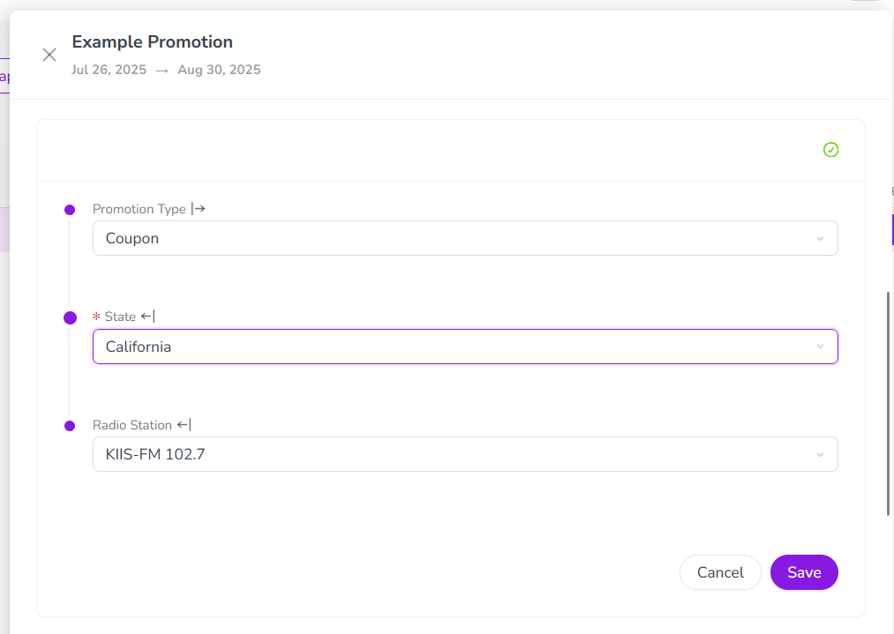

Unified navigation menu for Campaign Management, Financial Management & Work modules
To create a more cohesive and streamlined user experience across the Uptempo product, we have unified the sidebar navigation menus for the Campaign Management, Financial Management, and Work modules into a single navigation menu.
Previously, the sidebar navigation menu was split into two versions: one version for the Campaign Management/Financial Management modules, and a separate version for the Work modules. With the new unified navigation menu, you no longer need to switch between two separate menus. Instead, you can now seamlessly move between all Uptempo modules within a single menu, so you can get where you need to go faster and more easily.
Self-service password resets
We've added the ability for users to reset their own Uptempo account passwords without an administrator's help. Previously, administrators had to manually reset user passwords, which created delays and added extra work. Now, users can simply click Forgot password? on the Uptempo login page to securely reset their own password.
Faster and more convenient access: As a user, you no longer need to contact an administrator if you've forgotten your password. Just request a password reset to regain access to your account in minutes.
Reduced workload: If you're an administrator, you save time and effort by no longer having to manage password resets.
Secure reset process: Reset links expire after a set time, ensuring that your Uptempo accounts remain protected.
Moving administration settings to Uptempo platform
To improve the user experience for Uptempo administrators, and to make the process of transitioning to the Uptempo platform easier and smoother for BrandMaker customers, we have migrated some system administration settings areas from the legacy BrandMaker platform to the Uptempo platform.
As part of this migration, we:
Moved several settings pages out of the Administration > Overview section, and created new dedicated pages for them in the Administration section of the Uptempo navigation sidebar.
Updated the moved settings pages to enhance their usability, and to give them a fresh look that matches the overall Uptempo platform design.
Continuing the Timeline Visuals enhancements introduced with Color by Attribute last month, you can now set default color-coding for activities in the Timeline based on their activity type or type group.
Set colors for activity type groups: As an administrator, you can now assign colors to your activity type groups in the Activity Configuration section. You can also set colors directly on individual activity types if they're not part of a type group.
Default color-coding on the Timeline: When an activity type group has been assigned a color, all activities belonging to that group are automatically displayed in that color on the Timeline. Color-coding by activity type group is used as the default setting for the Timeline (replacing the system-default purple) whenever Color By Attribute isn't active, making it easier for users to interpret the Timeline at a glance.
More flexible rules for structuring the activity hierarchy
We've adjusted how activity rules work to add support for flexible hierarchy structures.
Activity rules now allow multiple parents: With this update, you can now set up activity rules that specify more than one parent for any activity type or type group. In the past, activity rules only allowed an activity type (or type group) to have a single parent. This meant that any activity type could only be created under one specific parent type: for example, Tactic activities could only be created under Program activities, but never directly under Campaign activities. Now, any activity type or type group can have multiple parents — giving you much greater flexibility in the way you structure your hierarchy.
Easier and faster hierarchy adjustments: In addition to giving you more design freedom, this change also significantly reduces your workload when you enter a new planning cycle. If you need to change the way your hierarchy works, you don't need to spend hours rebuilding it: now, you can easily make adjustments in minutes by only changing the activity types that need to change, while maintaining continuity with historical plans.
We've added a new attribute type for activities: with the Rich Text attribute type, you can now add fully-formatted text content to your activities.
Make key context available on activities: The Rich Text attribute lets you provide detailed context about your marketing plans directly on your Uptempo activities. Now, you can add the full contents of your campaign one-pager (like a Plan On A Page or strategy document) directly to the relevant campaign activity so you can quickly reference it. Or, if you have related files (like slide decks or white papers) stored in the cloud, you can add clickable links to your activities to make those files easily accessible.
Full support for essential text formatting options: The Rich Text attribute is displayed on activities as a WYSIWYG (What You See Is What You Get) text editor. Its toolbar lets you easily apply formatting to lay out and style your content: make text bold, italic, underlined, or a clickable link; add up to 3 levels of headings; organize text into numbered and bullet point lists; and highlight text with block quotes.
Set which activity types can be connected to investments
If you connect your activities in Campaign Management to your investments in Financial Management, you can now set which types of activity can be connected to investments.
Choose which activity types support Connect to Spend: As an administrator, you can now choose exactly which activity types can be connected to investments. If Connect to Spend is turned off for an activity type, activities of that type can't be connected to funding, and aren't shown as selectable options from the Financial Management side, either.
Enforce bottom-up planning: Previously, it was possible to connect investments to activities at all levels of your activity hierarchy. If you use bottom-up planning in your organization, the ability to turn Connect to Spend on or off by activity type means you can now ensure that team members are only connecting investments to the bottom level of your activity hierarchy. This creates greater clarity in your planning and reporting, and means you can spend less time fixing incorrectly connected funds.
You can now deactivate any list option onDrop-Down ListorMulti-Select Listattributes — even if it is currently in use on activities.
Declutter list options: After you deactivate a list option, it can no longer be selected on any new or existing activity. This is useful for adjusting the list options on attributes that need to be updated routinely: for example, an attribute that specifies the person responsible for reviewing or approving an activity.
Preserves historical data: If a deactivated list option was previously selected on any existing activities, it stays in place on those activities so that you can still reference historical data.
Attribute dependencies now support required dependent attributes.
Set any dependent attribute as required: Before, you could not use an attribute as a dependent attribute if it was required on any activity type. That restriction is now gone, and you can now set dependent attributes as required.
Create activities faster with conditionally required dependent attributes: In dependency chains of multiple linked attributes, you can make dependent attributes conditionally required: they're required only when specific options are selected in the controlling attribute, but otherwise don't need to be filled out. Together with this release's other improvements to attribute dependencies, this allows you to build streamlined dynamic forms in the activity details panel that significantly reduce the time needed to create an activity.
We've completely redesigned the controls for configuring columns in the Summary display mode. The number of available columns has increased with recent releases, so we've made some improvements to make it easier to navigate the longer list of available columns. Highlights of the redesign include:
Separate list of visible columns: Columns that are selected to be displayed in the table are now shown in their own, separate list. This lets you see at a glance which columns are currently selected, and makes managing your displayed columns faster.
Grouping and search: Finding the exact column you want is now much easier: the list of available columns is organized into column groups that have their own subheadings, and we've also added a search function.
Pinned columns: You can now select up to 3 columns to "pin". Like the Activities column, pinned columns always stay visible when you scroll the Summary table side-to-side.
You can now add comments directly to activities in Campaign Management, making it easier to collaborate in context.
Keep communication in one place: With the new comments feature in Uptempo Campaign Management, you can capture communication about your marketing activities right on the activities themselves. Use comments to add explanations of updates and record decisions, so that the reasoning behind changes and approvals is always clear and visible — no more digging through chats, emails, and meeting notes to figure out what happened.
Keep everyone in the loop: When an activity needs someone's attention, you can @mention them in comments, and they'll see a notification in Uptempo. Plus, you can reply directly to a comment to create a thread and keep discussions organized.
React with emoji: For those times words when words aren't quite enough (or when a thumbs-up is all you need), emoji are supported both in comment text, and as reactions.
User experience enhancements for attribute dependencies
We've made several UX improvements in the details panel to make it easier and faster to work with attribute dependencies, and to support required dependent attributes:
Grouped attribute controls for dependencies: If an activity type includes one or more attribute dependencies, the details panel now groups all attributes that are part of a dependency into their own section, and visually shows how the attributes are linked to one another. Within this section, the system does not auto-save attribute values as soon as they are selected. Instead, values are only saved when you click Save: this helps to protect data integrity by ensuring that all required dependent attributes have a value selected before changes are saved in the system. 
Dynamically hidden dependent attribute fields: In chained dependencies that contain multiple linked attributes, the system now automatically hides all dependent attributes until they're needed. For example, if a conditionally required dependent attribute is only valid for certain values in the controlling attribute, it is initially not shown in the details panel: it only becomes visible after you select one of the controlling attribute values that make it required. This simplifies the details panel, and makes it easier to use for activity types with a lot of attributes.
Auto-select dependent attribute values: The system now saves you unnecessary clicks when a dependent attribute only has one possible value. Whenever you choose an option in a controlling attribute that leaves only one valid option in its dependent attribute, the system simply selects that option for you — no extra click needed.
Connect multiple activities to a line item in a single step
Connecting multiple Campaign Management activities to a Financial Management investment line item is now faster and easier. You no longer need to connect activities to a line item one-by-one: in the redesigned activity picker, you can select multiple activities at once, then connect them all to the line item with a single click.
 Administration section of the Uptempo navigation sidebar.
Administration section of the Uptempo navigation sidebar.


{kind=link}
{kind=link}